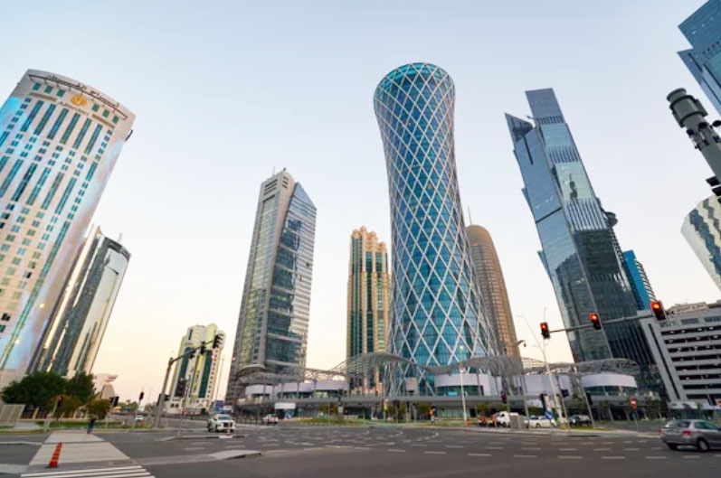
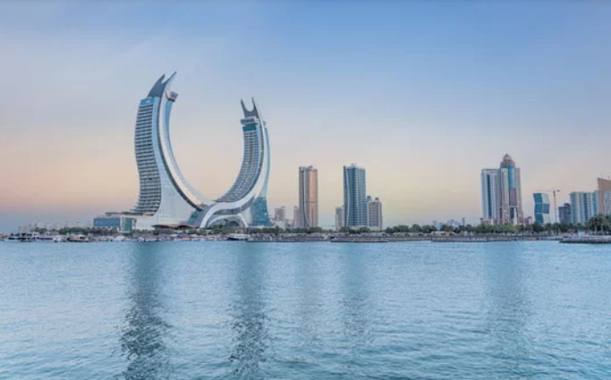
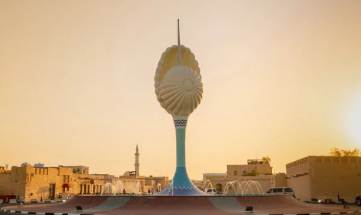

Qatar: A Journey Through Time
Experience the energy of Qatar through its dynamic hubs, where soaring modern skylines meet the timeless pulse of traditional souqs.
Iconic Landmarks
View all chevron_rightSouq Waqif
The Soul of Qatar’s Heritage
Museum of Islamic Art / MIA
A Masterpiece of Light and Form
National Museum of Qatar
The Desert Rose of Modern Design
The Pearl-Qatar
The Ultimate Island of Luxury
Dynamic Cities Built on Timeless Dreams

Doha
The Pulsating Heart of Tradition and Modernity

Lusail
The Visionary City of the Future

Al Wakrah
The vibrant pulse of modern life.
The Qatari Table
From the fragrant Machboos to the golden sweetness of Luqaimat, discover the true essence of Arabian hospitality on The Qatari Table
Majboos
The Fragrant Legacy of the Sea
Madrouba
The Resilience of the Desert
Karak Tea
The Soul Fuel of the Modern Streets
Esh Asaraya
The Bread of the Royal Palace
カタール国の歴史
State of Qatar
From Pearling Depths to Golden Horizons, Qatar’s story is one of ultimate resilience. A nation built on deep maritime traditions, now shining brightly on the world stage.
古代
ディルムン文明 （紀元前3000年頃 - 紀元前2000年頃）
ペルシャ湾沿岸で栄えた交易文明で、カタールもその影響を受けました。
アケメネス朝ペルシア（紀元前539年 - 紀元前330年）
ペルシャ帝国の一部として統治され、交易の要所として機能しました。
中世
イスラム帝国（ウマイヤ朝・アッバース朝） （7世紀 - 13世紀）
イスラム教の拡大に伴い、カタールはイスラム文化の影響を受け、交易の中継地として重要な役割を果たしました。
近世
オスマン帝国 （16世紀 - 20世紀初頭）
カタールはオスマン帝国の宗主権下に入りましたが、部族社会が一定の自治権を維持しました。
近現代・現代
アール＝サーニー家の統治（19世紀中頃 - 現在）
アール＝サーニー家がカタールを統治し始め、地域の主導権を握りました。
イギリスの保護領 （1916年 - 1971年）
イギリスとの保護条約により、外交と軍事面でイギリスの影響を受けました。
カタールの独立 （1971年）5代目首長アフマド
イギリスから独立を果たし、アール＝サーニー家による君主制国家として発展。
1972年 無血クーデター：6代目首長ハリーファ
石油・天然ガスの発展 （20世紀後半）
資源の発見により急速な経済成長を遂げました。
カタール国（1971年 - 現在）
石油と天然ガスを基盤に経済発展を続け、国際社会での存在感を高めています。特にスポーツや文化への投資が注目されています。 カタールは、古代から現代に至るまで、交易や資源を通じて重要な役割を果たしてきました。
1995年 無血クーデター：7代目首長ハマド
18世紀から19世紀にかけてクウェート、アラビア半島内陸部の部族がカタールに移住したことにより、現在のカタールの部族構成が成立した。その後1916年に英国の保護下に入る。1968年英国がスエズ以東から軍事撤退を行う旨宣言したことにより、1971年9月3日、カタールは独立を達成した。
アール＝サーニー家が統治する君主制国家
アール＝サーニー家の統治は現在も続いています。1825年にサーニー・ビン・ムハンマドがカタールの初代統治者（ハーキム）として登場して以来、アール＝サーニー家はカタールを統治してきました。現在の首長（アミール）は、2013年に即位したタミーム・ビン・ハマド・アール＝サーニー（ハマドが四男のタミーム・ビン・ハマド・アール＝サーニーに譲位）で、アール＝サーニー家の統治は世襲制で維持されています。 カタールはこの家系のもとで、石油や天然ガスの発展を通じて急速な経済成長を遂げ、国際的な影響力を高めています。